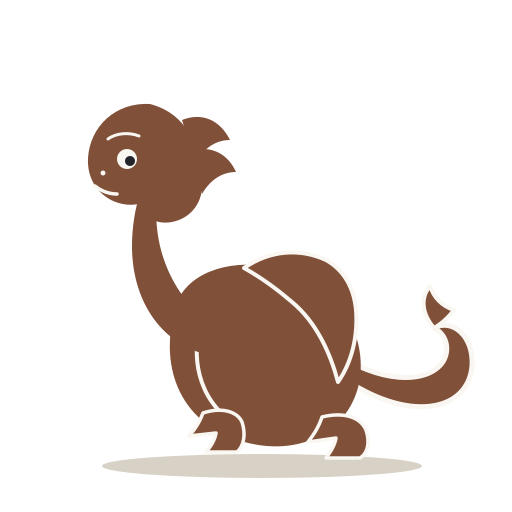

Цёмны галоўны экран · тры напрамкі
Прыклад першага экрана пасля адкрыцця KUDY. Назва гіда і кропкі — дэманстрацыйныя; карта — схема, без сцвярджэння пра GPS. Меню адчыняецца кнопкай «Меню» ў кожным варыянце.
А · Начны атлас рэдакцыйная вокладка
9:41●●● ▰
Аўтарскія прагулкіГісторыі набярэжнай
Горад, які можна пачуць у сваім тэмпе.

«Ну што, да вады?»
Прыклад гіда · беларускаяГісторыі набярэжнай
Спачатку праглядзі кропкі і змест. Прагулка пачынаецца яўным дзеяннем.
Б · Ліхтар на карце вольны выбар кропак
9:41●●● ▰
Горад побачВыбірай, куды ісці.
Умоўныя кропкі бачныя да старту. Парадак застаецца тваім.
Ддаступна
Ддаступна
Ддаступна
Схема кропак · дэмаПрыклад гідаГісторыі набярэжнай
Кропкі можна адкрываць у любым парадку.
В · Цёмная гліна ціхія рубрыкі
9:41●●● ▰
Гданьск · прыкладЗнайдзі сваю гісторыю ў горадзе.
Прагулка, месцы побач і гарадскія ідэі — усё пачынаецца з твайго выбару.
«Хадзем, пакажу?»
Прыклад гідаГісторыі набярэжнай
Самастойная прагулка са свабодным парадкам.